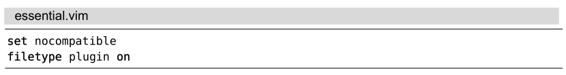
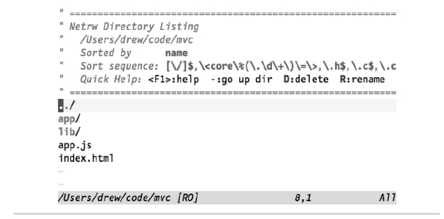
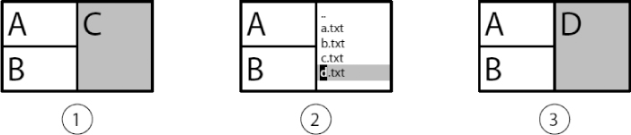

）。
）。技巧43使用netrw 管理文件系统
除了查看和编辑文件内容以外，Vim 还允许查看目录的内容。Vim 发行版中自带的 netrw 插件允许我们对文件系统进行管理。
准备工作
本节介绍的功能并不是由 Vim 的核心源代码实现的，而是由一个名为 netrw 的插件实现的。此插件是Vim 发行版的标配插件，因此不需要额外安装任何东西。然而我们必须确保Vim 已被配置为可加载插件，也就是说，你的vimrc中至少要有下面这几行配置：

结识 netrw——Vim原生的文件管理器
如果不是用文件路径，而是用一个指向目录的路径启动 Vim 的话，Vim 就会打开一个文件管理器窗口：
➾ $ cd code/file/mvc
➾ $ ls
《 app app.js index.html lib
➾ $ vim .
图7-1中的屏幕截图显示了文件管理器的样子。它是一个常规的 Vim 缓冲区，但它代表的是一个目录的内容，而不是文件的内容。
我们可以用k和j键上下移动光标。在按<CR>键时，Vim 会打开光标下的条目。如果光标位于目录上，那么此窗口的内容会更新为该目录的内容；如果光标位于文件上，那么该文件会被载入一个缓冲区里，并把它显示在当前窗口中。这将导致当前窗口中的文件管理器被该缓冲区的内容所替代。要想返回上级目录，可以使用 - 键，或是把光标移到 .. 条目上再按<CR>。
在文件管理器窗口中，我们可以用普通 Vim 缓冲区中可用的所有动作命令来浏览目录列表，而不是仅限于j或k。
举个例子，如果想打开index.html文件，可以先执行查找操作/html<CR>，这样就可以把光标移到想要的位置。

图7-1 netrw——Vim的“原生”文件管理器
打开文件管理器
我们可以用:edit {path}命令打开文件管理器窗口，只是在执行此命令时要以目录名（而不是文件名）作为{path}参数。由于符号 . 代表了当前工作目录，因此，如果执行:edit .命令，就会在文件管理器里打开工程的根目录。
如果想在文件管理器里打开当前文件所在的目录，可以输入:edit %:h（在技巧41中的“相对于活动文件目录打开一个文件”中介绍过这一用法）。另外，netrw插件也提供了另一个更为方便的命令来实现该功能，即:Explore（参见:h :Explore）。
上述两条命令都支持缩写。因此，没必要输入完整的:edit .，只需输入:e.就可以了。我们甚至可以把符号 . 前的空格也省略掉。另外，我们也可以把:Explore命令缩写成:E。下表总结了这些命令的完整格式及其缩写格式：
| Ex 命令 | 缩写 | 用途 |
| :edit . | :e. | 打开文件管理器，并显示当前工作目录 |
| :Explore | :E | 打开文件管理器，并显示活动缓冲区所在的目录 |
除:Explore外，netrw 还提供了:Sexplore及:Vexplore命令，这两条命令分别在一个水平切分窗口及垂直切分窗口里打开文件管理器。
与分割窗口协同工作
典型的文本编辑器图形用户界面一般使用侧边栏显示文件管理器，有时这会被称作工程目录树（project drawer）。如果你习惯于使用这种模式，那么就会觉得 Vim 的:E 及:e.命令表现得有些古怪，因为它们会用文件管理器替换掉当前窗口的内容。Vim之所以采用这种方式，是因为这种方式可以很好地与分割窗口协同工作。
想想下面第一幅图中的窗口布局：

我们看到这幅图中有3个窗口，每个窗口都显示了一个不同的缓冲区。让我们暂时假设Vim 的侧边栏包含了一个工程目录树。如果想打开一个文件的话，我们可以在工程目录树里点击该文件的名字。但是，这个文件将在哪个窗口中打开呢？
窗口C是当前的活动窗口（以阴影表示），因此似乎在此窗口中打开该文件是很自然的。然而，工程目录树和活动窗口之间的关联并不是一目了然的，哪个窗口是活动窗口的信息很容易丢失，从而会导致令人意外的结果，当你在工程目录树里选择一个文件时，该文件却没在你期望的窗口里打开。
现在，让我们抛开工程目录树的想法，考虑一下真正适用于 Vim 的工作方式。在执行:Explore命令时，文件管理器在当前活动窗口中打开，如第二幅图所示。这样一来，当选中一个文件时，毫无疑问它会被载入到同一个窗口中。
我们可以把每个窗口都想象成一张纸牌，纸牌的一面显示文件内容，而另一面则显示文件管理器。在执行:Explore命令时，当前活动窗口中的牌会翻到文件管理器这一面（见第二幅图）；而当选中一个准备编辑的文件时，我们会按下<CR>把牌翻过来，这一次窗口中就会显示刚刚选中的那个文件的内容（见第三幅图）。如果在调出文件管理器后，又想切换回刚才正在编辑的那个文件，此时可以使用<C-^>命令。
从某种意义上说，我们可以认为 Vim 的窗口有两种模式：一种模式针对文件，而另一种针对目录。这种模式与 Vim 的分割窗口紧密结合在一起，因而并不适合使用工程目录树的概念。
使用 netrw 完成更多功能
netrw插件不仅可以浏览文件系统，还可以创建新文件（参见:h netrw-%）及目录（参见:h netrw-d），重命名已有的文件及目录（参见:h netrw-rename），或是删除它们（参见:h netrw-del）。Vimcasts的专题15对此进行了更为深入的讲解(3)。
我们甚至还未说起过此插件的杀手级功能，其名字正因为此功能而来，即netrw 可以通过网络读写文件(4)。该插件可以利用多种协议读写网络文件，包括scp、ftp、curl 及wget，这取决于你的系统上可以用哪些协议。要了解更多这方面的内容，请查阅:h netrw-ref。